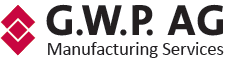

Specific G.W.P. fit
Each rationale maps to CNC machining, small-batch components, machined assemblies, supplier overflow, quality documentation or prototype-to-series manufacturing.

A targeted outbound campaign built around verified European manufacturing accounts where G.W.P. can start credible conversations about CNC machining, prototype-to-series parts, machined assemblies, supplier overflow, inspection-ready components, production support and reliable outsourced manufacturing capacity.
The strongest opener is not a broad manufacturing pitch. It is a specific part-family, supplier-risk, prototype, capacity, inspection or delivery-pressure question that gives Rocco a reason to introduce G.W.P. as a responsive manufacturing partner.
Each rationale maps to CNC machining, small-batch components, machined assemblies, supplier overflow, quality documentation or prototype-to-series manufacturing.
Every company has two named contact routes so outreach can test both an operational and senior business path.
Each opener references that company's actual manufacturing context instead of repeating a generic supplier pitch.
This account map is tailored for G.W.P. Manufacturing Services AG and Rocco Weyers. LinkedIn buttons use exact person-and-company searches so links keep working; confirm title, employment and best destination immediately before launch because public roles can change.
| Company | Website | Specific G.W.P. Fit | Contact 1 + Position | Contact 2 + Position | Buyer Signal + Source | Personalized Outreach Angle |
|---|
The account logic does not claim an active purchasing project. It connects public company evidence to a precise machining, supplier-risk, prototype, quality, overflow-capacity or production-support question Rocco can use.
Every target includes a third-party source tied to that company rather than the company's own website.
Every rationale names the manufacturing flow where G.W.P. has a credible supplier reason to speak.
Contacts are named routes with LinkedIn search links; before launch, confirm employment, role and preferred destination for each person.

Beespoke builds focused outbound systems for technical B2B companies. The approach combines account research, buyer-signal mapping, concise cold email, and LinkedIn outreach to create qualified conversations without overclaiming intent.
This is not a scraped contact list. It is outbound infrastructure built around specific manufacturing accounts, public operating signals, and credible reasons to discuss G.W.P. Manufacturing Services AG.